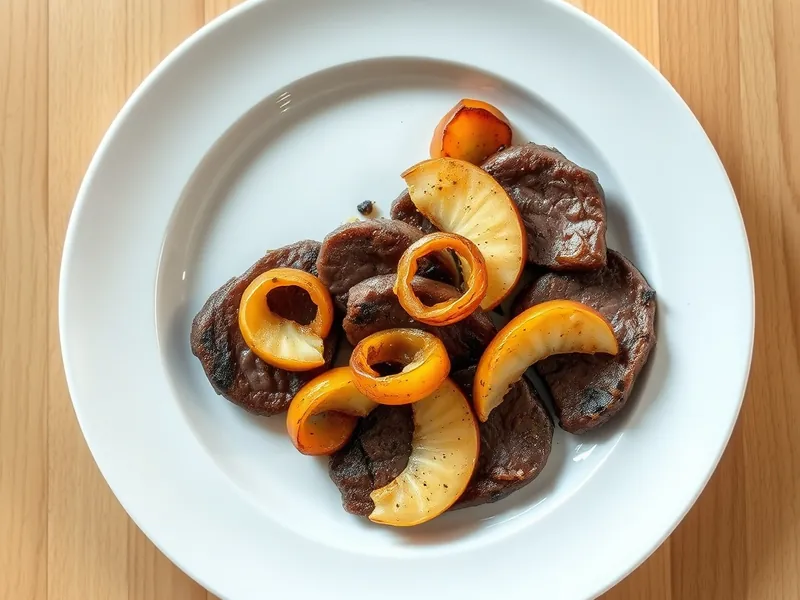

Печень по-берлински с яблоками и луком
Говяжья печень с карамелизованным луком и дольками яблок в сливочном масле
25 мин2 порц.538 ккал на порциюБ 34 · Ж 29 · У 35Европейская кухня
Открыть в приложении: порции, таймеры, список покупок
Продукты на 2 порц.
- Говяжья печень350 г
- Яблоки1 шт
- Лук репчатый2 шт
- Сливочное масло30 г
- Мука пшеничная1 ст. л.
- Растительное масло1 ст. л.
- Соль1 щеп.
- Перец чёрный молотый1 щеп.
Как готовить
- Нарежьте лук кольцами, яблоко без сердцевины дольками толщиной 1 см. Печень очистите от плёнки и нарежьте ломтями толщиной 1 см.
- Растопите половину сливочного масла на среднем огне и жарьте лук 8 минут, помешивая, до мягкости и золотистого цвета. Переложите в тарелку.
- Положите остальное сливочное масло и обжарьте дольки яблок по 2 минуты с каждой стороны до румяных краёв, но чтобы не развалились. Выложите к луку.
- Обваляйте печень в муке, влейте в сковороду растительное масло и жарьте ломти на среднем огне по 2-3 минуты с каждой стороны до корочки.
- Посолите и поперчите печень, сверху выложите лук и яблоки, прогрейте вместе 1 минуту.
Совет. Берите кисло-сладкие плотные яблоки вроде семеренко: мягкие сорта на сковороде превращаются в пюре.